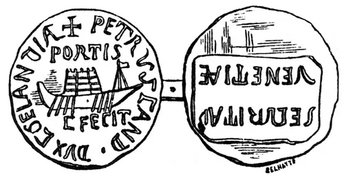

Шутка фальшивомонетчика
Вот одна любопытная и поучительная история, связанная с хеландием, знакомство с которым мы начали недавно.
Немало копий было в свое время сломано относительно появления названия хеландий в ранней истории Венеции. Каша заварилась после публикации в «Archéologie navale»(1840), а затем в «Glossaire nautique» (1848) О.Жаля изображения бронзовой медали, которую он видел в Венеции в 1834 г.

На лицевой стороне был изображен гребной корабль, в средней части которого находится широкая и высокая башня. Вокруг изображения написаны слова: PETRVS CAND. DVX CAELANDIA †, и над кораблем : PORTIS. Под кораблем написано: C. FECIT. На реверсе медали в прямоугольнике имеется надпись: SECVRITAS VENETIÆ. О.Жаль скомпоновал надпись таким образом: « Petrus Cand. Dux Chelandia portis С. fecit. » («Петрус Кандиано, дож, поставил (разместил) хеландии при входах [в лагуны]»). Медаль не датирована. В истории Венеции IX-X вв. известны четыре дожа из семейства Кандиано, носившие имя Пьетро. Касони (Giovanni Casoni, историк венецианского Арсенала), сообщивший о медали О.Жалю, считал, что она относится к периоду правления дожа Пьетро Кандиано IV (959-976гг.). Однако связана она, как считал сам О.Жаль, с событием, относящимся к правлению дожа Пьетро Кандиано I (887г.), первой заботой которого после получения власти от отрекшегося предшественника стало обеспечение защиты Венеции от деятельности пиратов из Наренты (Далмация). Эти братья-славяне долгое время внушали ужас венецианцам. Для предотвращения набегов необходимо было защитить входы (или как это называется на медали – «двери») венецианской лагуны, поставив на якорь там сильные и хорошо вооруженные корабли. Ранее подобным образом уже поступали дожи Пьетро и Джованни Традонико. Они для защиты лагуны применили два хорошо вооруженных корабля galandria, по мощи своей и размерам до этого не использовавшихся в Венеции. Об этом сообщается в хронике, которую цитирует Дж.Ф. Занетти («Della origine di alcune arti principali appresso i Veneziani» , с.41(1841 г.)). О.Жаль, критически проанализировав текст хроники, пришел к выводу, что и Galandria, и использовавшиеся в других хрониках названия Salandria, Zalandria, Celandria – это искаженные формы византийской Xελάνδρια (Chelandria), которая, в свою очередь, является искажением изучаемого нами хеландия ( Χελάνδιον). Необходимость обороны Венеции путем охраны входов в лагуну осознавалась во все времена, в том числе и в новейшей истории; последнее тому подтверждение – это превращение наполеоновскими войсками, захватившими Венецию, последнего буцентавра венецианских дожей в плавучую батарею, которую поставили на якорь в Лидо.
Как бы то ни было, но информация о медали широко обсуждалась морскими историками на протяжении многих лет. Последней заметной публикацией стала книга Лилиан Рей «The art and archaeology of Venetian ships and boats», выпущенная издательством Chatham в 2001г.
Все бы хорошо, но мешала одна неувязка: никто не видел самой медали.
И только в ХХ веке медаль была обнаружена в коллекции Джорджио Катти, в Археологическом музее Загреба. Коллекция была приобретена департаментом археологии национального музея Хорватии в 1894г. Но вот незадача. Ученые Mirnik Gorini и Chino установили, что медаль является одной из многочисленных подделок, изготовленных известным венецианским ювелиром и антикваром Алвисом Менегетти (1691-1798). Поэтому для изучения истории хеландия никакой ценности она не представляет.